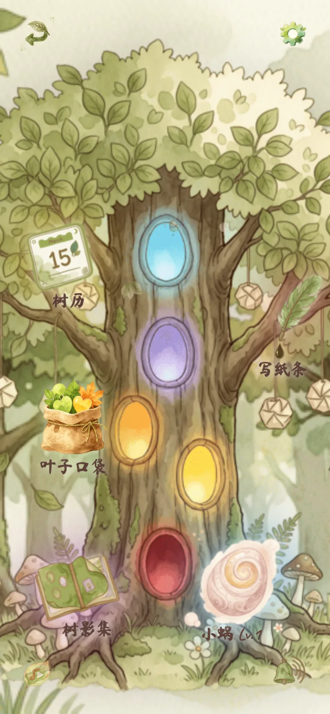
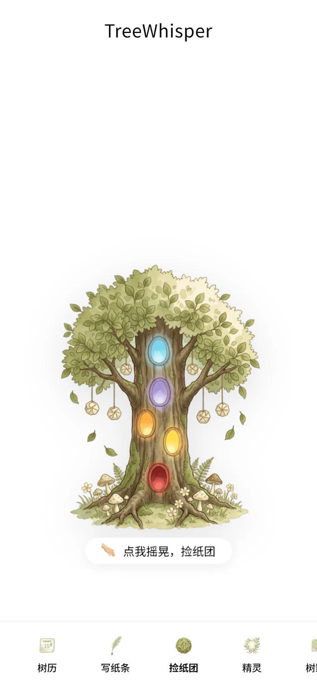
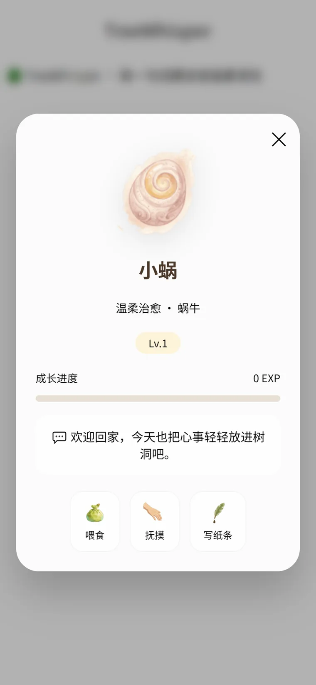

树语
TreeWhisper
一个情绪树洞社区。写下的纸条可以贴在树上，也可以揉成纸团扔进瓶子， 等一个陌生人在某个深夜把它捡走。

它是什么
一个不鼓励你被认出来的社区。
大多数社区在奖励表达，
这个社区在奖励「说完了可以不解释」。
两种说出来：贴上去，或者扔出去
纸条可以公开挂在树上，也可以揉成纸团扔进瓶子漂流。前者等人回应，后者只求被看见一次。 同一段情绪给了两条出口，用户不用在「说出来」和「藏起来」之间二选一。
树的颜色就是情绪量表
树上有五个发光的树洞，分别对应五种情绪。写纸条之前先选一个洞——不用填心情打分表， 也不会因为有「情绪标签」而显得在打卡。数据拿得到，用户没感觉。
用一只蜗牛换留存
小蜗是树上的养成角色，靠喂食、抚摸、写纸条成长。「欢迎回家」这句话每天不一样， 而它的等级只看你回来过几次。情绪类产品最怕用户「好了就走」， 一只需要照顾的小东西，比签到奖励更不像任务。
回访的理由是树历，不是红点
树历、树影集把「你在这里待过多久」做成可看的东西，通知只在纸条被捡起、被回应时出现。 不做诱导点击的推送，是这个产品调性的一部分。
几个判断
做情绪产品，克制比功能难。
- 匿名，还是身份
- 注册只用账号密码，不引导填昵称头像。用户可以被记住「回来过」，但不必被记住「是谁」。
- 公开，还是私有
- 写之前就选好去处：上树或入瓶。不做事后可见性开关——那个开关只会让人写到一半开始表演。
- 互动，还是沉默
- 捡到纸团不强制回应，可以只是读过。点赞、评论、关注全都没有，避免把情绪变成社交货币。
- 即时，还是沉淀
- 通知只做「有人捡到了你的纸团」这一类，其余全部沉到树历里。让时间成为产品的一部分。
界面实拍
手机端真实截图，点开可放大。



怎么做的
全栈由我一个人串起来，代码由 AI 协作完成。
Express + EJS 服务端渲染，Prisma 管数据，Socket.io 做实时通知。 选服务端渲染而不是前后端分离，是因为这个产品几乎每个页面都需要登录态和未读状态， 客户端渲染只会多一次白屏。
上线前把演示数据和真实数据完全分开：重新部署一份干净副本， 只带源码和空库，密钥重新生成。演示环境允许公开注册，数据可能被重置。
验收标准：从注册到发出第一张纸条不超过 40 秒；任何一屏都能单手点到主要操作。
完整的产品说明、设计取舍和更多截图，在 独立展示页 里。